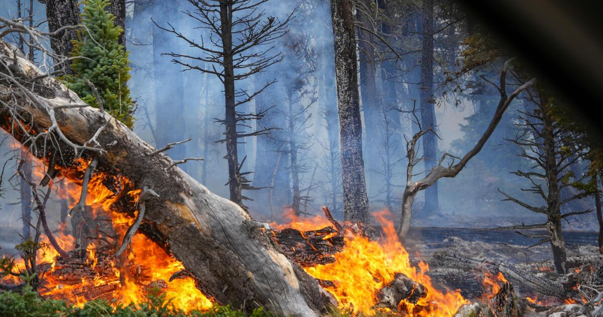
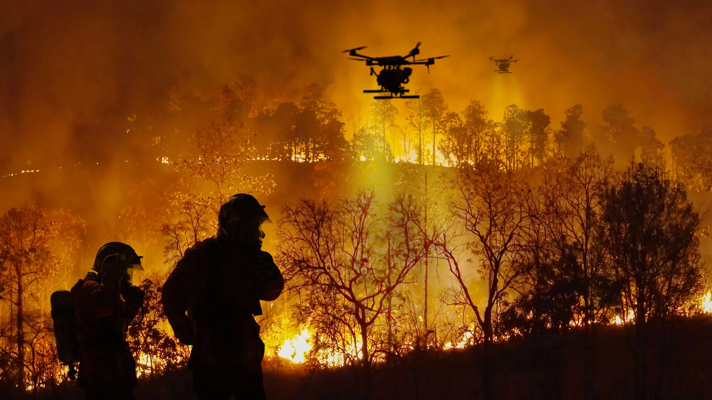
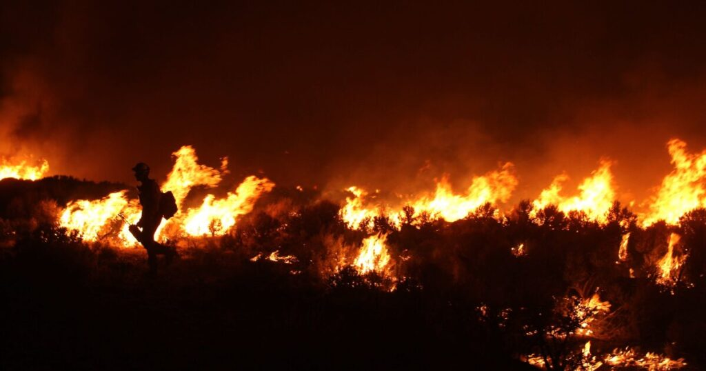
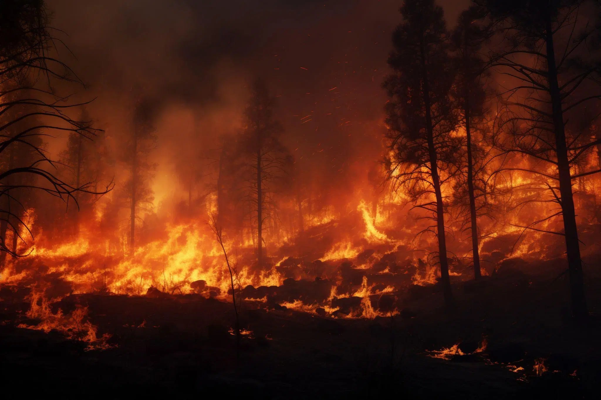
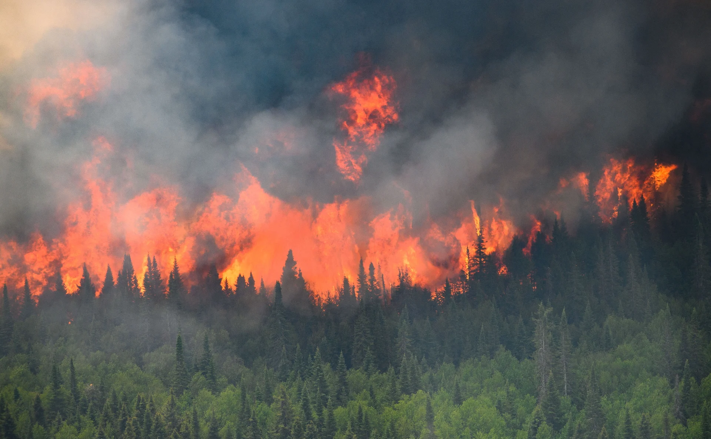
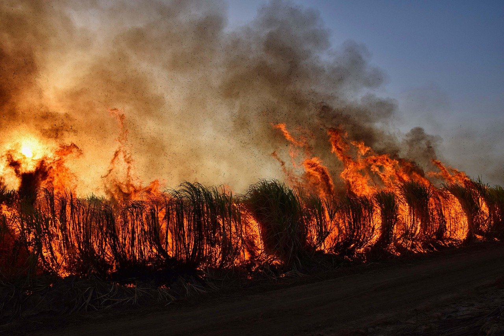

1. Prime Minister's National Relief Fund - PMNRF (India)
India's premier national official fund which handles massive emergency financial allocations, medical aid, and relief packages for citizens affected by severe natural hazards.
pmnrf.gov.inWe only suggest trusted, official and verified websites

India's premier national official fund which handles massive emergency financial allocations, medical aid, and relief packages for citizens affected by severe natural hazards.
pmnrf.gov.in
While wildfires severely destroy human settlements, they trap countless wild animals and forest ecosystems. Wildlife SOS is a prominent Indian organization that accepts public donations to rescue, treat, and rehabilitate animals injured.
wildlifesos.org
Based in Guwahati, Assam, Aaranyak is a premier scientific and environmental research organization that handles ecological disasters, habitat restoration, and climate-induced emergencies like forest degradation and regional fires in Northeast India.
aaranyak.org
The Australian Red Cross runs dedicated emergency disaster appeals, accepting global public donations to distribute financial grants, personal support.
www.redcross.org.au
This major foundation operates dedicated wildfire relief programs (such as the SAVE program) to provide immediate financial assistance, emergency cash cards, and recovery support to families and communities devastated by severe wildfires.
cafirefoundation.org
GlobalGiving hosts specialized international "Wildfire Relief Funds" whenever massive forest fires break out globally (such as in Canada, Europe, or South America).
globalgiving.org